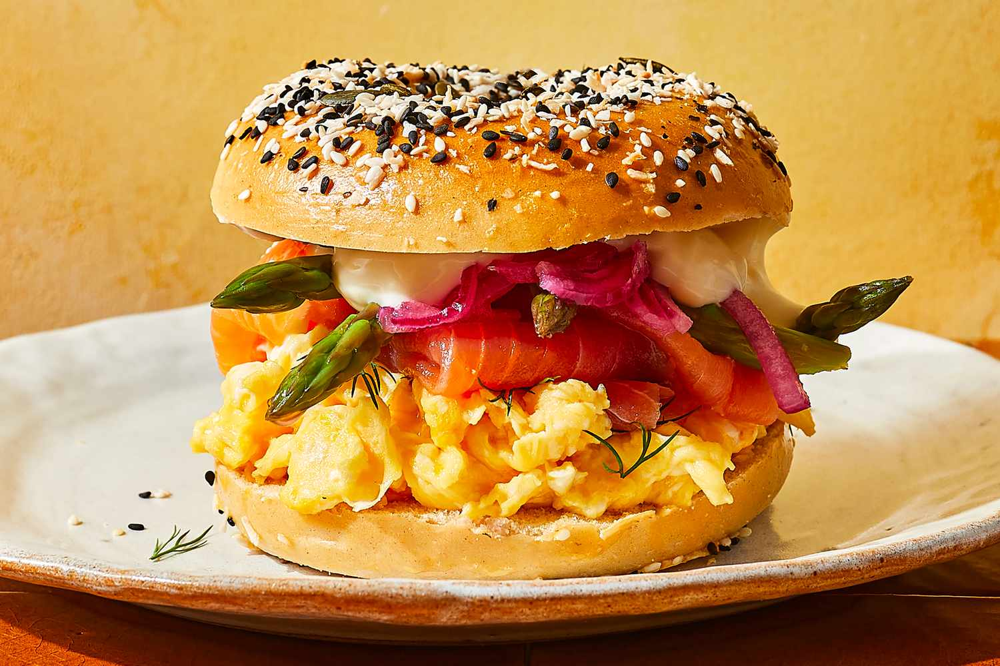

Smoked Salmon Bagel Sandwich

Description
This smoked salmon bagel sandwich recipe is made with grilled asparagus, pickled red onions,
and soft scrambled eggs, along with cream cheese, and fresh dill. It's all loaded up on a
toasted everything bagel, and it might just be the best bagel sandwich we've ever made.
Ingredients
- 1 medium everything bagel
- 2 large eggs
- Salt, to taste
- Freshly ground black pepper, to taste
- 1 1/2 teaspoons unsalted butter
- 1 tablespoon coarsely chopped fresh dill
- 2 ounces smoked salmon
- 5 spears grilled, roasted
- 1/4 cup homemade or store-bought pickled red onion
- 1 1/2 tablespoons cream cheese
Steps
- Gather the ingredients.
- Slice the bagel in half crosswise and toast to your liking.
- Meanwhile, crack the eggs into a small bowl, add salt and pepper to taste and whisk vigorously.
- Heat a small nonstick skillet over medium heat. Add the butter.
- When the butter has melted, pour the eggs into the skillet. Stir continuously with a silicone spatula until
the eggs have cooked through but are still soft. Top with the dill and set aside.
- Gently place the soft scrambled eggs on the cut side of the bottom half of the bagel.
Top with the smoked salmon, asparagus, and pickled red onions.
- Spread the cream cheese over the cut side of the remaining bagel half.
Close the sandwich, cream cheese side down on the pickled red onions and serve.
Back To Home